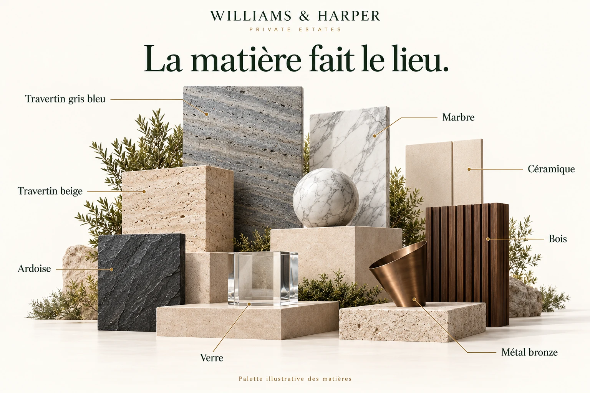
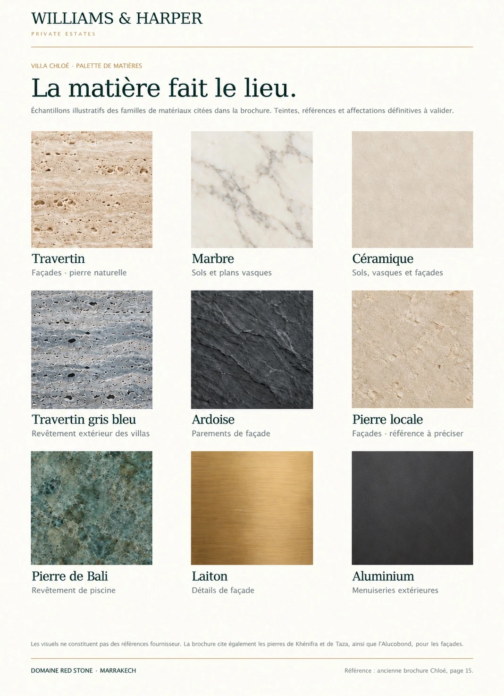
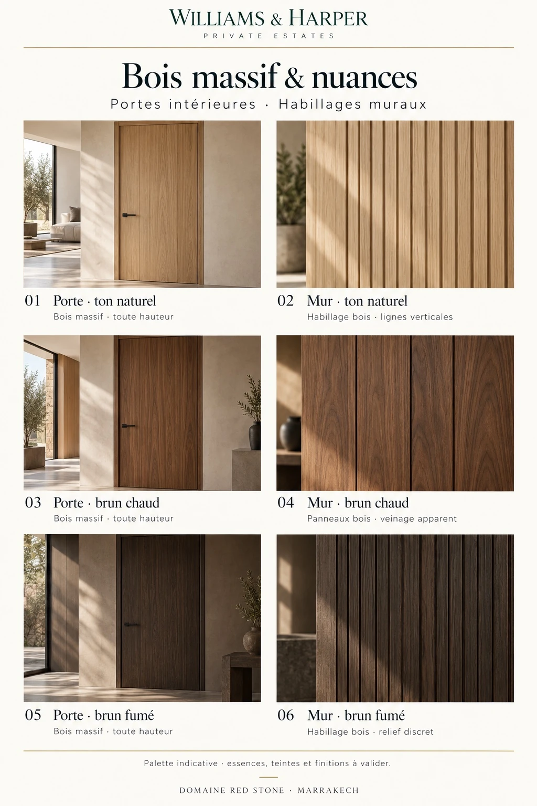
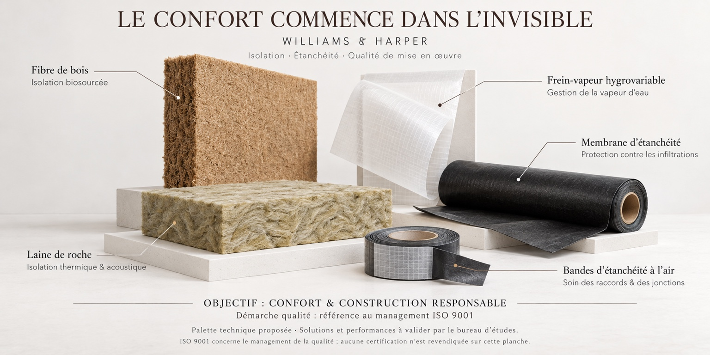
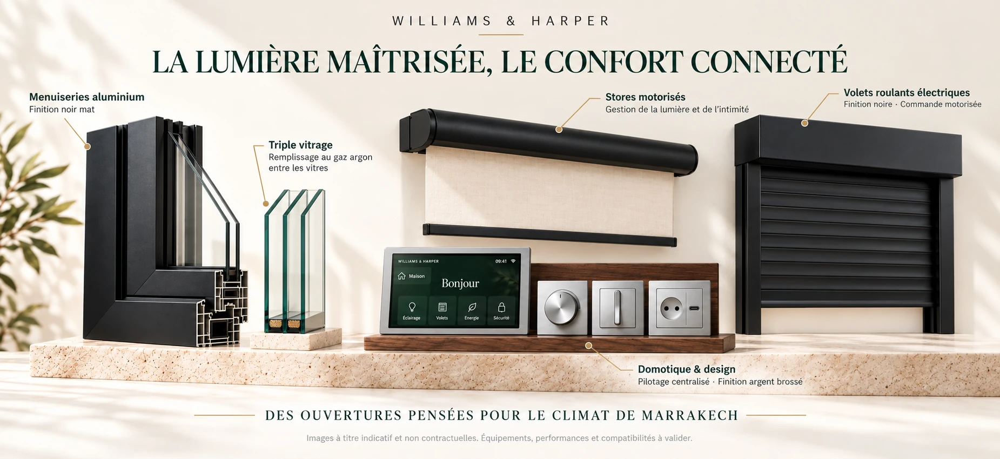

Binnencomfort
Centrale airconditioning met buitencompressor. Open haard voorzien in de woonkamer.
Van de tuin tot de woonruimtes: ontdek de materialen, buiteninrichting en voorzieningen die voor Domaine Red Stone worden voorgesteld. Een palet dat architectuur, landschap en dagelijks comfort met elkaar verbindt.

De uitrusting en bouwkeuzes uit de referentiebrochure, overzichtelijk gepresenteerd.
Centrale airconditioning met buitencompressor. Open haard voorzien in de woonkamer.
Sanitair warm water via zonne-energie, met elektrische ondersteuning.
Domotica, ledverlichting binnen en buiten, tv-distributie via glasvezel en voorinstallatie voor telefoon / internet.
Overloopzwembad en jacuzzi. Waterbehandeling via zoutelektrolyse en zwembadbekleding in Balisteen.
Uitgeruste keuken en waterontharder. Sanitair en kranen volgens het lastenboek.
Aluminium buitenschrijnwerk met dubbele beglazing. Thermische en akoestische isolatie. Kamerhoge massief houten deuren en kasten.
Dubbele wand: betonblokken buiten, geperforeerde bakstenen binnen en steenwol in de spouw. Verlaagde BA13-plafonds met ingeblazen isolatie bij de schaduwvoegen. Zonwering met metalen structuur en houten panelen.
Gemotoriseerde poort met afstandsbediening, zonder meerprijs.
Voorzieningen uit de referentiebrochure, te bevestigen in het bijgewerkte lastenboek.
Palmen, sculpturale olijfbomen en borders vormen het voorgestelde beplantingspalet voor de tuinen en gemeenschappelijke ruimtes.
Een landschapspark van meer dan 4.000 m² vormt een aanvulling op de privétuinen van de villa’s en geeft de natuur een ruime plaats binnen het domein.

Beplantingspalet: majestueuze palmen als accentbomen; slanke cipressen voor architecturale structuur; sculpturale olijfbomen; gelaagde beplanting, verfijnd loof en bodembedekkers. Soorten, maten en vormen worden bevestigd in het beplantingsplan.
De beelden op deze website worden ter illustratie getoond en zijn niet-contractueel.




De beelden op deze website worden ter illustratie getoond en zijn niet-contractueel.
De kwaliteit van een woning zit ook achter de muren en onder het dak. Thermische en akoestische isolatie, waterdichting en aansluitingen vormen samen de gebouwschil. Voorgestelde biobased en minerale isolatie wordt gecombineerd met lucht-, damp- en waterbeheer, afgestemd door het studiebureau.

Isolatie en waterdichting: houtvezel, rotswol, damprem, membranen en afdichtingsbanden. Voorgestelde oplossingen en prestaties worden bevestigd door het studiebureau.
De beelden op deze website worden ter illustratie getoond en zijn niet-contractueel.
Open het zicht naar de tuin, verzacht het licht of geniet van privacy. De voorgestelde selectie combineert matzwarte aluminium kozijnen, driedubbele beglazing met argongas tussen de ruiten, gemotoriseerde zonwering en centrale domotica. Persoonlijke scenario’s maken dagelijkse handelingen eenvoudiger.

Ramen en verbonden comfort: matzwarte aluminium kozijnen; driedubbele beglazing met argongas tussen de ruiten; gemotoriseerde zonwering voor licht en privacy; centrale domotica in geborsteld zilver met travertin en notenhout. Uitrusting, prestaties en compatibiliteit te bevestigen.
Zwarte elektrische rolluiken · Gemotoriseerde rolgordijnen · Domotica · De beelden op deze website worden ter illustratie getoond en zijn niet-contractueel.
Ontdek ook de buitenruimtes van het domein.
Buiteninrichting & voorzieningen →
De zorg voor een woning is zichtbaar in haar lijnen.
En voelbaar in haar details.